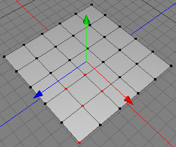
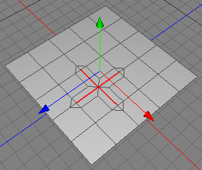
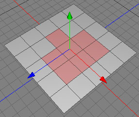
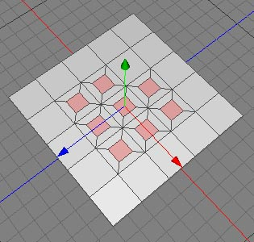

Inner Extrude Tool
The inner extrude tool is an excellent tool to increase the detail of a mesh, as you can see on the pictures below. It creates new edges around the selected properties.
Modes
The inner extrude tool can only be applied to raw polygon objects.

To perform an inner extrude onto a point selection, just click in the 3D view. You can now adjust the inner extrude by dragging the mouse to the left or right. Release the mouse button to complete the operation.Take care, since under some circumstances it can be possible that overlapping polygons will be created.

Inner point extrude before and after the operation.

Similar to usage in point mode.

Inner edge extrude before and after the operation.

Similar to usage in point mode.
 
Inner polygon extrude before and after the operation.
Keys
- none
Properties
- Offset: Set a value bigger than zero when you want to quantize the offset.
- Preserve group: When this property is not checked, every selected polygon will be inner extruded and not the whole group together. This property only works in the polygon mode.

perserve group switched off